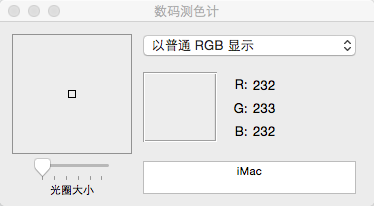
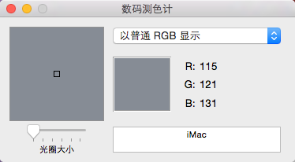
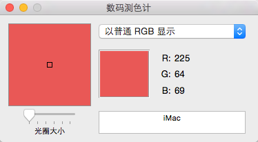
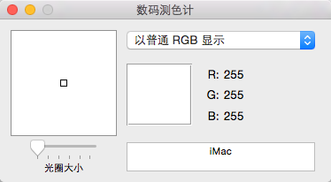
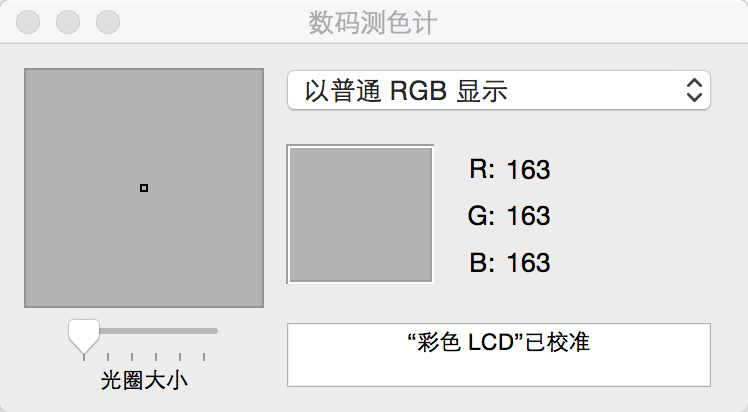

警告框背景颜色
取消按钮的颜色
破坏按钮的颜色
普通按钮颜色

算法流程
创建AlertAction 为每个AlertAction添加一个按钮，每次HXAlertViewController 调用 addAction方法的时候，就将alertAction的按钮添加到HXAlertViewController的alertView上。
当添加完之后，上一个控制器调用模态方法弹出视图，这样我们就在HXAlertViewController的 viewWillAppear方法中编写alertView的弹出动画，以及调整其上面的按钮的位置。正确调整位置，当用户点击了上面的按钮，通过Block回传给调用者